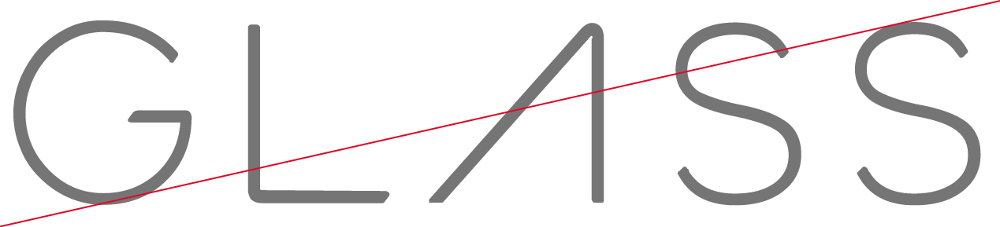

Follow these guidelines when referring to the Glass name or brand.
See the Style section to see how to create Glassware that coincides with the Glass look and feel.
Do not use, modify, or mimic any proprietary Glass icons or assets for your properties. Examples include, but are not limited to, physical merchandise, promotional materials, third party brands, and product reviews. If you have to refer to the Glass brand, do so only with text in line with the Glass in text guidelines.
For Glassware and its related web and mobile properties, you can use the resources provided on Assets, unmodified, to properly create and promote Glassware.
Do not use these Glass icons and assets for any other purpose, for example, in physical merchandise that is related to your approved Glassware or in non-approved Glassware. If you have to refer to the Glass brand in other situations, do so only in text in line with the Glass in text guidelines.
These guidelines apply to all text that refers to the Glass name and brand.
Correct: “Cat Facts for Glass” Incorrect: “Glass Cat Facts”, “Glassy Cat Photos”
Glass™ always has a trademark symbol the first time or the most prominent time it appears in a creative.
Glass is always capitalized and is never plural or possessive.
Correct: “Send timeline cards to all of your users’ Glass”, “Get location updates from a user’s Glass” Incorrect: "Wear Google Glasses”, “Swipe forward on Glass’s timeline”
Correct: “Glass features” or “Glass optics” Incorrect: “Glass Cat Facts” or “Glass Pet Store Finder”
“Glass is a trademark of Google Inc.”
Editor’s note: Google abandoned the trademark in October 2017.

Correct: Wearables for Glass. Incorrect: for glass.
Correct: See how Glass feels. Incorrect: See how feels.
Portions of this page are reproduced from work created and shared by Google and used according to terms described in the Creative Commons 4.0 Attribution License.